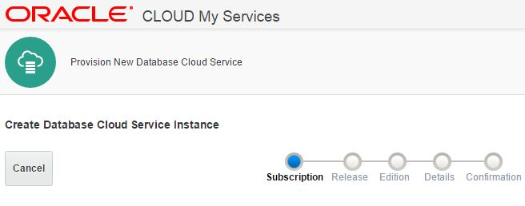

You buy resources on the Cloud, but they are mutualized, thanks to virtualization. Are you sure ou have the resources you paid for? When it comes to Oracle databases there are 3 ways to test performances:
You buy resources on the Cloud, but they are mutualized, thanks to virtualization. Are you sure ou have the resources you paid for? When it comes to Oracle databases there are 3 ways to test performances:
- Run an application, or a simulation of an application, such as the excellent SwingBench from Dominic Giles
- Run low-level calibration tools, such as Orion that simulate database, good when you have no database yet
- Or run something in the middle, and there is SLOB. SLOB has proven that it’s the right workload to measure IO or CPU performance, all from database calls, but independent on other factors.
In order to run SLOB you have to create a database. Let’s do that in the Oracle Cloud Services in order to evaluate the performance. This exemple was done on the EMEA cloud based in Amterdam.
Create the VM
In Oracle Database Cloud Services click on Create Service  Choose Oracle Database Cloud Service – Virtual Image because I’ll create the database myself with dbca. Choose Oracle Database 12c Release 1 Choose Enterprise Edition – Extreme Performance because I want all options I’ve chosen 2 OCPU (equivalent to 2 cores with 2 threads)
{kind=link}
Create the Storage Volume
In Oracle Compute Cloud Service, click on storage and Create Storage volume
{kind=link}
I want to measure IOPS so I choose the ‘optimized for latency’. Here are the different choices:
{kind=link}
That’s all from the GUI, I’ll continue in command line. The VM is an OVM accessible with ssh.
Create 100G filesystem
Connect as root:
$ ssh opc@test-perf Authorized uses only. All activity may be monitored and reported. -bash-4.1$ id uid=500(opc) gid=500(opc) groups=500(opc) -bash-4.1$ sudo su
Check disk name:
[oracle@test-perf ~]$ lsblk NAME MAJ:MIN RM SIZE RO TYPE MOUNTPOINT xvdb 202:16 0 21G 0 disk ├─xvdb1 202:17 0 200M 0 part /boot ├─xvdb2 202:18 0 15.8G 0 part / └─xvdb3 202:19 0 4G 0 part [SWAP] xvdc 202:32 0 100G 0 disk
Partition disk:
bash-4.1# fdisk /dev/xvdc
Command (m for help): n
Command action
e extended
p primary partition (1-4)
p
Partition number (1-4): 1
First cylinder (1-13054, default 1):
Using default value 1
Last cylinder, +cylinders or +size{K,M,G} (1-13054, default 13054):
Using default value 13054
Command (m for help): w
The partition table has been altered!
Check the partition is name:
bash-4.1# lsblk NAME MAJ:MIN RM SIZE RO TYPE MOUNTPOINT xvdb 202:16 0 21G 0 disk ├─xvdb1 202:17 0 200M 0 part /boot ├─xvdb2 202:18 0 15.8G 0 part / └─xvdb3 202:19 0 4G 0 part [SWAP] xvdc 202:32 0 100G 0 disk └─xvdc1 202:33 0 100G 0 part
Create filesystem:
bash-4.1# mkfs -t ext4 /dev/xvdc1 mke2fs 1.41.12 (17-May-2010) Filesystem label= OS type: Linux Block size=4096 (log=2) Fragment size=4096 (log=2) Stride=0 blocks, Stripe width=0 blocks ... Writing inode tables: done Creating journal (32768 blocks): done Writing superblocks and filesystem accounting information: done ...
Mount the filesystem
bash-4.1# mkdir /u02 bash-4.1# ls -l /dev/disk/by-uuid | grep xvdc1 lrwxrwxrwx 1 root root 11 Aug 27 15:13 d8012d1f-be4c-486a-8230-f4a1631910f7 -> ../../xvdc1 bash-4.1# echo "UUID=d8012d1f-be4c-486a-8230-f4a1631910f7 /u02 ext4 defaults 0 0" >> /etc/fstab bash-4.1# mount /u02 ; chown oracle:oinstall /u02
Here it is
bash-4.1# lsblk NAME MAJ:MIN RM SIZE RO TYPE MOUNTPOINT xvdb 202:16 0 21G 0 disk ├─xvdb1 202:17 0 200M 0 part /boot ├─xvdb2 202:18 0 15.8G 0 part / └─xvdb3 202:19 0 4G 0 part [SWAP] xvdc 202:32 0 100G 0 disk └─xvdc1 202:33 0 100G 0 part /u02
Install Oracle Software
It’s packaged in the image, preinstalled. Just untar it:
bash-4.1# mkdir /u01 ; chown oracle:oinstall /u01 && cd /u01 bash-4.1# tar -xvf /scratch/db/db12102_bits.tar.gz drwxr-xr-x oracle/oinstall 0 2015-01-16 10:10 app/ drwxr-xr-x oracle/oinstall 0 2014-07-21 18:41 app/oracle/ drwxr-xr-x oracle/oinstall 0 2014-07-21 18:41 app/oracle/checkpoints/ drwxr-xr-x oracle/oinstall 0 2014-09-25 17:08 app/oracle/product/ drwxr-xr-x oracle/oinstall 0 2014-07-21 18:37 app/oracle/product/12.1.0/ drwxr-xr-x oracle/oinstall 0 2015-04-22 14:41 app/oracle/product/12.1.0/dbhome_1/ ... app/oraInventory/logs/OPatch2014-09-25_02-19-13-PM.log app/oraInventory/logs/OPatch2015-03-20_06-39-10-PM.log app/oraInventory/logs/oraInstall2014-07-21_03-37-40PM.out app/oraInventory/logs/OPatch2014-10-12_09-21-02-PM.log app/oraInventory/orainstRoot.sh
Run orainstRoot.sh and root.sh
bash-4.1# app/oraInventory/orainstRoot.sh Changing permissions of /u01/app/oraInventory. Adding read,write permissions for group. Removing read,write,execute permissions for world. Changing groupname of /u01/app/oraInventory to oinstall. The execution of the script is complete. bash-4.1# app/oracle/product/12.1.0/dbhome_1/root.sh Check /u01/app/oracle/product/12.1.0/dbhome_1/install/root_test-perf_2015-08-27_15-29-05.log for the output of root script
added 29-AUG-15 By default sar is not running in this image. As root we have to:
bash-4.1# mkdir -p /var/log/sa ; chmod a+r /var/log/sa
I remove the tar file because I need some space to create the database (limited space in trial), and don’t need to be root anymore.
bash-4.1# rm /scratch/db/db12102_bits.tar.gz bash-4.1# exit exit -bash-4.1$ exit logout Connection to 140.86.4.11 closed.
Install SLOB
I’ve downloaded SLOB from http://kevinclosson.net/slob/
$ scp 2015.07.16.slob_2.3.0.3-1.tar.gz oracle@test-perf:/home/oracle $ ssh oracle@test-perf Authorized uses only. All activity may be monitored and reported. [oracle@test-perf ~]$ [oracle@test-perf ~]$ tar -zxvf 2015.07.16.slob_2.3.0.3-1.tar.gz
Create SLOB database
[oracle@test-perf ~]$ /u01/app/oracle/product/12.1.0/dbhome_1/bin/dbca -createDatabase -templateName General_Purpose.dbc -gdbName SLOB -sid SLOB -sysPassword oracle -systemPassword oracle -storageType FS -listeners LISTENER -sampleSchema false -databaseType MULTIPURPOSE -silent
And change instance parameters required by SLOB (they are in simple.ora)
[oracle@test-perf ~]$ . oraenv <<< SLOB [oracle@test-perf ~]$ cd SLOB [oracle@test-perf SLOB]$ sqlplus / as sysdba SQL> alter system reset sga_target; SQL> create pfile from spfile; SQL> shutdown immediate; SQL> host grep -v /data simple.ora >> $ORACLE_HOME/dbs/initSLOB.ora SQL> create spfile from pfile; SQL> startup SQL> create bigfile tablespace IOPS datafile '/u02/IOPS.dbf' size 10M autoextend on next 10M maxsize unlimited;
I change the slob.conf to set SCALE to the maximum size that fit in /u01
[oracle@test-perf SLOB]$ head slob.conf UPDATE_PCT=25 RUN_TIME=300 WORK_LOOP=0 SCALE=95000M WORK_UNIT=64 REDO_STRESS=LITE LOAD_PARALLEL_DEGREE=4
Now I can setup the SLOB tablespace. It’s long so I run it with nohup.
nohup sh setup.sh IOPS 1
and compile the wait kit
[oracle@test-perf SLOB]$ ( cd ./wait_kit ; make ; ) rm -fr *.o mywait trigger create_sem cc -c -o mywait.o mywait.c cc -o mywait mywait.o cc -c -o trigger.o trigger.c cc -o trigger trigger.o cc -c -o create_sem.o create_sem.c cc -o create_sem create_sem.o cp mywait trigger create_sem ../ rm -fr *.o
Run PIOs test
I’ll test physical I/O latency. I restart the instance to reset counters (especially the V$EVENT_HISTOGRAM_MICRO because it’s not snapshotted by AWR)
[oracle@test-perf SLOB]$ sqlplus / as sysdba SQL> startup force
and run SLOB
[oracle@test-perf SLOB]$ sh runit.sh 1 NOTIFY : 2015.08.28-04:05:33 : NOTIFY : 2015.08.28-04:05:33 : Conducting SLOB pre-test checks. UPDATE_PCT: 25 RUN_TIME: 300 WORK_LOOP: 0 SCALE: 90000M (11520000 blocks) WORK_UNIT: 64 REDO_STRESS: LITE HOT_SCHEMA_FREQUENCY: 0 DO_HOTSPOT: FALSE HOTSPOT_MB: 8 HOTSPOT_OFFSET_MB: 16 HOTSPOT_FREQUENCY: 3 THINK_TM_FREQUENCY: 0 THINK_TM_MIN: .1 THINK_TM_MAX: .5 ... NOTIFY : 2015.08.28-04:11:02 : SLOB test is complete.
You know I use Orachrome Lighty to look at performance statistics. Here is the workload:
{kind=link}
Most of I/0 are less than 1ms. As I’m in 12c I have more details from wait event histograms in microseconds:
column event format a30 set linesize 120 pagesize 1000 select event,wait_time_micro,wait_count,wait_time_format from v$event_histogram_micro where event like 'db file sequential read' order by event,wait_time_micro;
EVENT WAIT_TIME_MICRO WAIT_COUNT WAIT_TIME_FORMAT ------------------------------ --------------- ---------- ------------------------------ db file sequential read 1 0 1 microsecond db file sequential read 2 0 2 microseconds db file sequential read 4 0 4 microseconds db file sequential read 8 0 8 microseconds db file sequential read 16 0 16 microseconds db file sequential read 32 0 32 microseconds db file sequential read 64 0 64 microseconds db file sequential read 128 0 128 microseconds db file sequential read 256 27 256 microseconds db file sequential read 512 390619 512 microseconds db file sequential read 1024 172914 1 millisecond db file sequential read 2048 3387 2 milliseconds db file sequential read 4096 1709 4 milliseconds db file sequential read 8192 1237 8 milliseconds db file sequential read 16384 96 16 milliseconds db file sequential read 32768 56 32 milliseconds db file sequential read 65536 4 65 milliseconds db file sequential read 131072 0 131 milliseconds db file sequential read 262144 1 262 milliseconds
I’ll not comment the result here, that’s for future posts. I can confirm that filesystemio_options=setall because filesystem cache would be below 100us.
Run LIOs test
To test logical reads, I want all blocks in cache, so I increase the buffer cache:
SQL> show parameter db_cache_size NAME TYPE VALUE ------------------------------------ ----------- ------------------------------ db_cache_size big integer 112MSQL> alter system set db_cache_size=2048M scope=spfile; System altered. SQL> startup force;
and reduce the SCALE to 500M in slob.conf and set UPDATE to 0%
[oracle@test-perf SLOB]$ sh runit.sh 1 NOTIFY : 2015.08.28-04:24:38 : NOTIFY : 2015.08.28-04:24:38 : Conducting SLOB pre-test checks. UPDATE_PCT: 0 RUN_TIME: 300 WORK_LOOP: 0 SCALE: 500M (64000 blocks) WORK_UNIT: 64 REDO_STRESS: LITE HOT_SCHEMA_FREQUENCY: 0 DO_HOTSPOT: FALSE HOTSPOT_MB: 8 HOTSPOT_OFFSET_MB: 16 HOTSPOT_FREQUENCY: 3 THINK_TM_FREQUENCY: 0 THINK_TM_MIN: .1 THINK_TM_MAX: .5 ... NOTIFY : 2015.08.28-04:36:15 : SLOB test is complete.
I check the activity from Lighty to that I’m sure I run only in CPU:
{kind=link}
If you wonder what is the brown activity before, it’s log file switch when I’ve forgot to set UPDATE_PCT to 0
SLOB gathers the AWR report where we check that buffer cache hit ratio is 100%, that DB CPU(s) per second is 1:
Load Profile Per Second Per Transaction Per Exec Per Call
~~~~~~~~~~~~~~~ --------------- --------------- --------- ---------
DB Time(s): 1.0 13.1 0.00 2.92
DB CPU(s): 1.0 13.1 0.00 2.92
Background CPU(s): 0.0 0.0 0.00 0.00
Redo size (bytes): 17,786.6 233,499.7
Logical read (blocks): 587,373.4 7,710,960.9
Block changes: 73.5 965.0
Physical read (blocks): 0.5 5.9
Physical write (blocks): 0.3 3.9
Read IO requests: 0.5 5.9
Write IO requests: 0.2 2.1
Read IO (MB): 0.0 0.1
Write IO (MB): 0.0 0.0
IM scan rows: 0.0 0.0
Session Logical Read IM:
User calls: 0.3 4.5
Parses (SQL): 4.9 64.0
Hard parses (SQL): 0.0 0.3
SQL Work Area (MB): 0.1 1.9
Logons: 0.1 0.8
Executes (SQL): 8,888.3 116,683.9
Rollbacks: 0.0 0.0
Transactions: 0.1
Instance Efficiency Percentages (Target 100%)
~~~~~~~~~~~~~~~~~~~~~~~~~~~~~~~~~~~~~~~~~~~~~
Buffer Nowait %: 100.00 Redo NoWait %: 100.00
Buffer Hit %: 100.00 In-memory Sort %: 100.00
Library Hit %: 100.00 Soft Parse %: 99.52
Execute to Parse %: 99.95 Latch Hit %: 100.00
Parse CPU to Parse Elapsd %: 80.00 % Non-Parse CPU: 99.99
Flash Cache Hit %: 0.00
Again more comments on future blog post, but that looks reasonable for and Intel(R) Xeon(R) CPU E5-2690 v2 @ 3.00GHz Compare with physical CPU: https://twitter.com/kevinclosson/status/636905086338342913
So what?
From what I tested, a 2 OCPU VM with 128GB storage on low latency storage, the expected performance is there. You should be able to follow the same procedure explained here (setup a VM with SLOB for PIO and LIO test). I think it’s a good idea to do that when you have a new cloud service just to be sure that everything is set up as expected.
Big thanks to my colleague Vincent Matthey for the setup of our trial on Cloud Services. His documentation (published soon) helped me a lot. And to @kevinclosson @BertrandDrouvot @OracleSK for their help interpreting the performance results.